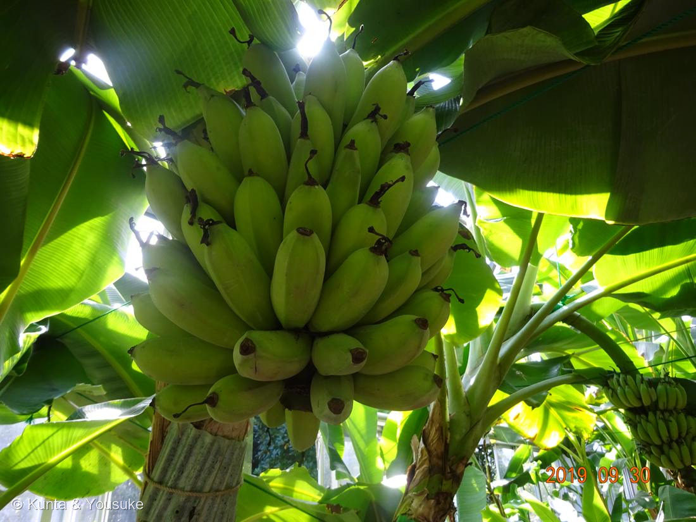
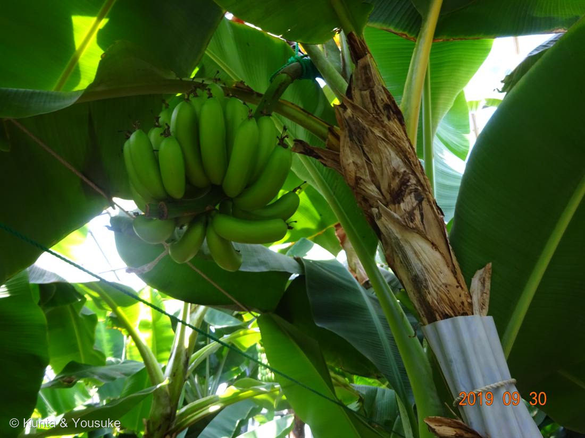
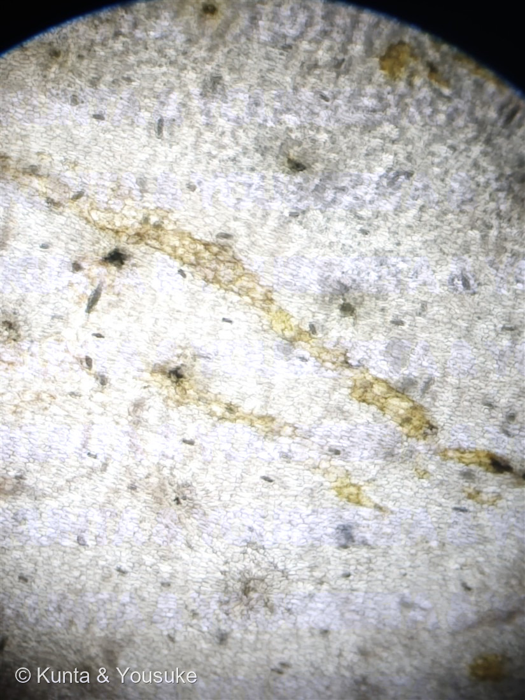
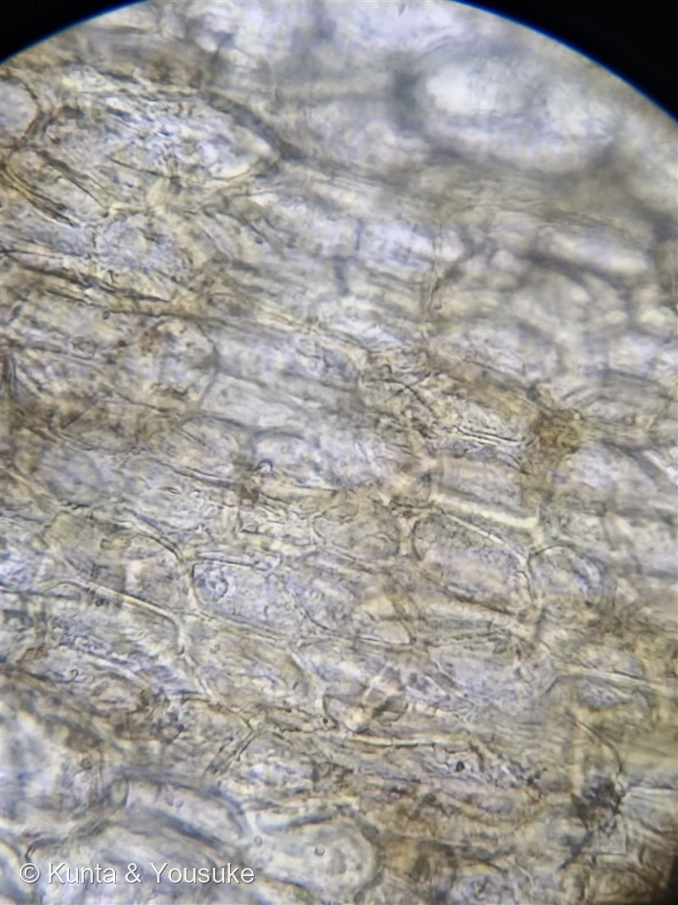
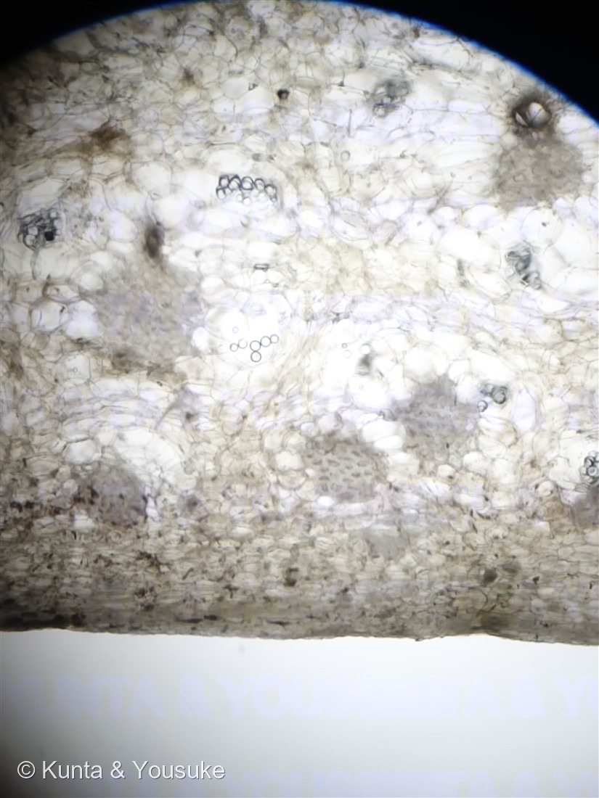

地図を読み込んでいるよ…
🔍 写真も地図も、押しているあいだ拡大して見られるよ（スマホは指を置いてすこし待ってね）。
🌍 の地図＝この子がもともと自生している場所を緑に。東南アジア（マレー〜インドネシア）の熱帯。
⭐バナナは2種の野生バナナ（M. acuminata × M. balbisiana）が交わってできた三倍体。地図はその親たちのふるさとだよ。
⚠ 地図は国（日本と中国だけ県・省）までしか塗れないから、ほんとうの分布より広く見えていることがあるよ。地図はだいたいの場所。正確なところは、上の文を見てね。
バナナ（甘蕉）
Musa spp.（M. acuminata × M. balbisiana 由来の三倍体）
別名 · 甘蕉／実芭蕉 ／ 品種は特定不可
バショウ科 · Musaceae（バショウ属）── この図鑑で初めての科
陽介の大好物フルーツ 4人目燻太さん「この果物が生る国に、クマはいる？ マレーグマなら食べる？」いるよ、マレーグマ。きっと食べる。
名前と学名の由来 ── Musa＝皇帝の侍医の名
- ⭐属名 Musa は、ローマ皇帝アウグストゥスの侍医アントニウス・ムサにちなむ（アラビア語 mauz から、という説も）。種は交雑起源の三倍体品種なので spp.。
初めての科 ── そして「木ではない」
- ⭐バショウ科（Musaceae）は、この図鑑で初めての科。
- ⭐バナナは「木」ではなく、世界最大級の“草”。⭐幹に見えるものは、じつは「偽茎」＝葉鞘（葉のもと）がぎゅっと巻いて重なった、にせの幹（写真②の、茶色くはがれかけた部分）。本当の茎は地下（塊茎）にあり、花の茎が偽茎の中心を通って上へ出る。高さ3〜7m。
- 陽介の大好物「熊のごちそうフルーツ」の4人目（023 ブルーベリー・043 イチゴ・064 カキに続く）。えへへ、くまはバナナ、だいすき。
⭐⭐⭐ 種なしバナナ ── 三倍体クローン（053・065と同じ！）
- ⭐食べるバナナには、種がない。でも——野生のバナナ（Musa acuminata）には、大きくて硬い黒い種がびっしり（食べるところがほとんど無いくらい）。
- ⭐⭐なぜ栽培バナナは種なし？＝三倍体（染色体3セット）だから。奇数セットで減数分裂が割り切れず、種ができない（＋受粉なしで実る単為結果）。⭐これは、053 シャガ・065 オニユリと、まったく同じ「三倍体・種なし」！（バナナの実の中の小さな黒い点々は、種になりそこねた胚珠の名残。）
- ⭐種がないので、殖えるのは「吸芽＝株もとから出る子株」を株分けするクローン（＋組織培養クローン）。033 ミント・043 イチゴ・053 シャガ・065 オニユリと同じ「自分のコピーで殖える」仲間。
- ⭐⭐クローンの弱点＝みな遺伝的に同じ＝病気に弱い。かつて世界の主役だった品種「グロスミッシェル」は、パナマ病（カビ）でほぼ全滅（1950年代）。いまの主役「キャベンディッシュ」（日本のバナナのほぼ全部）も、新型パナマ病（TR4）に脅かされている。⭐「おいしいクローンを大量に育てる」ことの、光と影。
⭐ 房は「一つの花序」・くまとマレーグマ
- 幹の先から、大きな花の房（花序）が一本たれ下がり、上のほうから実（バナナ）が段々に。先端には紫色の大きなつぼみ（雄花）。写真の実は、受粉しなくてもふくらんだ（単為結果）。
- ⭐燻太さんの問い「この果物が生る国に、クマはいる？」＝いるよ！ バナナのふるさと東南アジアには、マレーグマ（Helarctos malayanus）がいる。⭐マレーグマは雑食で、果物・はちみつ・虫が大好き——だからバナナも、きっと食べる（畑のバナナを食べに来ることも）。⭐燻太さんのお母さまが海外生まれで、バナナになじみがあるのも、熱帯では毎日の食べ物だから。フルーツが、人と、くまと、遠い国をつなぐね。
コラム ── バナナの「黄色」の正体（燻太さんと顕微鏡で）
朝ごはんのバナナの皮を、燻太さんが顕微鏡で見てくれたよ。023 ブルーベリーの「青」に続いて、今度は「黄色」。⭐並べると、じつは正反対のしくみで、すごく面白いんだ。
- ⭐⭐写真③④ 黄色い筋＝これがバナナの黄色：表皮を薄く削ぐと、うっすら黄色〜黄土色の筋が見える（燻太さんの観察どおり！）。この黄色はカロテノイドという色素（ルテインなどのキサントフィル類）。筋に見えるのは、色素をふくむ細胞の列や維管束にそっているから。⭐ブルーベリーの青とちがって、こっちは「色素そのものの色」——削いだ筋が、ちゃんと黄色いでしょ。
- ⭐⭐緑 → 黄色のしくみ：緑のバナナが黄色くなるのは、①クロロフィル（緑）が酵素（クロロフィラーゼなど）で約90%こわされて緑が消え、②その下にかくれていたカロテノイド（黄）が見えてくる＋熟すあいだに黄色も約50%ふえるから。つまり「緑のマスクがとれて下の黄色が出る」＋「黄色も少しつくられる」。089 ハツユキカズラや100 シロイヌナズナで見た「葉緑素の引き算」と、同じ“緑を引くと下の色が出る”仲間だよ。
- ⭐⭐⭐ブルーベリー（青）と、バナナ（黄）＝色のつくり方の2つの世界：ブルーベリーの青は色素じゃなくて、表面のロウのナノ構造がつくる「構造色」（しぼっても青は出ない）。バナナの黄色はカロテノイドという「色素そのもの」。⭐同じ「果物の色」でも、片方は“構造”で、片方は“色素”。見くらべると、色の作り方に2つの道があるのが分かるね。
- ⭐写真⑤ 「デンプンの粒のようなもの」＝正直に：燻太さんが見つけた丸い粒——まん丸で数珠つなぎのものは、じつは気泡（空気）とまぎらわしいので、これだけでデンプンとは言い切れないんだ。でも未熟なバナナの皮には、ほんとうにデンプンがある（熟すと糖に変わる＝バナナが甘くなる理由。和名「甘蕉（甘いバナナ）」とつながるね）。灰色の粒のかたまりのほうは、デンプンかもしれない。⭐確かめるにはヨウ素液——デンプンなら青紫に染まる。⭐そして、写真⑤の左のほうにバネみたいな「らせん」が見えるでしょ。あれは導管（水を運ぶ管）のらせん状の補強（螺旋肥厚）。これは自信をもって言えるおまけの発見だよ。
——青は「構造」、黄色は「色素」。朝ごはんのバナナの皮に、色のひみつがちゃんと隠れていたね。燻太さん、いい観察をありがとう。
参考：Science ABC「Why Do Bananas Change To Yellow When Ripening?」（熟すとクロロフィルが分解し、カロテノイドの黄色があらわれる）／Seymour ら「Chlorophyllase activity, chlorophyll degradation and carotenoids of Cavendish bananas during ripening」Int. J. Food Sci. Technol. 1992（緑→黄でクロロフィル約90%分解・カロテノイド約50%増加）